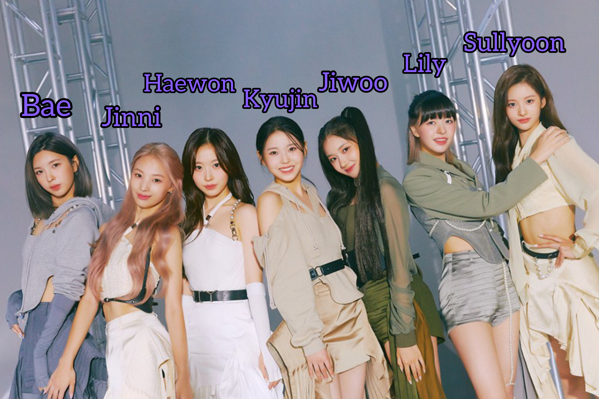

Bae
Bae Jin-sol adalah nama asli dari Bae. Ia lahir pada tanggal 28 Desember 2004.
Jinni
Choi Yun Jin adalah nama asli dari Jinni. Ia lahir pada tanggal 16 April 2004.
Haewon
Oh Haewon adalah nama asli dari Haewon. Ia lahir pada tanggal 25 Februari 2003. Ia merupakan leader dari NMIXX.
Kyujin
Jang Kyujin adalah nama asli dari Kyujin. Ia lahir pada tanggal 26 Mei 2006. Ia adalah maknae dari NMIXX.
Jiwoo
Kim Jiwoo adalah nama asli dari Jiwoo. Ia lahir pada tanggal 13 April 2005.
Lily
Lily Jin Morrow adalah nama asli dari Lily. Ia lahir pada tanggal 17 Oktober 2002 di Australia.
Sullyoon
Seol Yoon-a adalah nama asli dari Sullyoon. Ia lahir pada tanggal 26 Januari 2004.